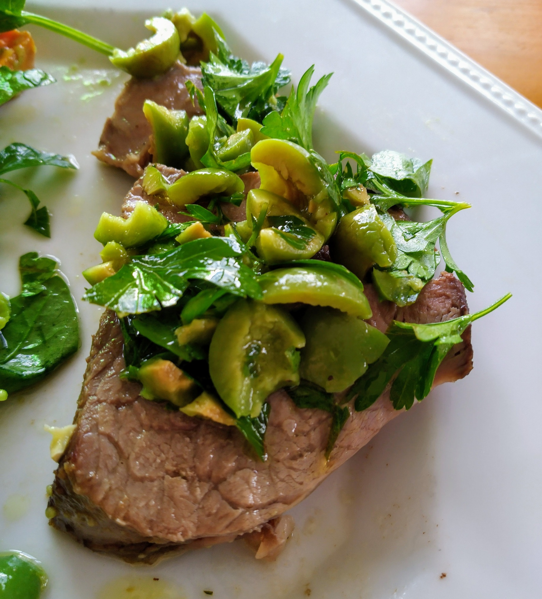

Roast Lamb with Balsamic Glaze and Olive Tapenade
 Meat
Meat

- 2kg lamb leg
- 1/3 cup maple syrup
- 1 1/2 tbs balsamic vinegar glaze
- 1 bunch parsley
- 230g jar pitted sicilian olives
- 1/2 cup olive oil
- 1 small lemon, juiced
Preheat oven to 180 degrees Place lamb in baking dish, pour 1 cup of water over base of dish Combine maple syrup and glaze in bowl. Baste lamb with one-third of maple glaze. Bake for 15 mins or until lamb starts to brown Reduce oven to 160 degrees, bake lamb, basting every 15 mins for 1-2 hours Finely chop parsley and olives Combine parsley, olives, lemon juice and olive oil. Season with pepper. Top lamb with olive tapenade.